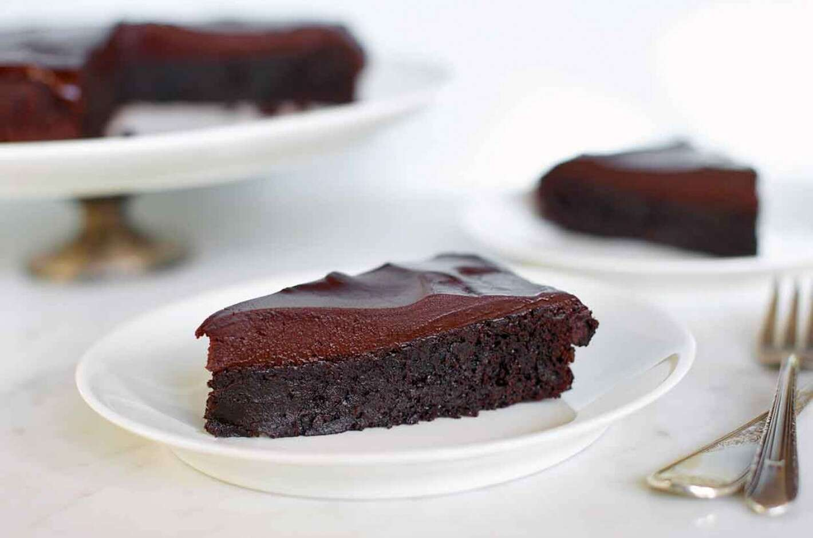

Flourless Chocolate Cake
A delicious ending to your meal

Description:
This flourless cake, featuring both chocolate and cocoa, is rich, rich, RICH! A thick icing of chocolate ganache glaze takes it over the top. Depending on how you observe Passover, this cake can make a great addition to your Seder since it contains neither flour nor leavening; and of course, it's also ideal for those looking to avoid gluten.
Ingredients
Cake:
- 1 cup (170g) semisweet chocolate chips or bittersweet chocolate chips
- 8 tablespoons (113g) unsalted butter, room temperature
- 3/4 cup (149g) granulated sugar
- 1/4 teaspoon salt
- 1 to 2 teaspoons espresso powder, optional
- 1 teaspoon King Arthur Pure Vanilla Extract, optional
- 3 large eggs
- 1/2 cup (43g) Dutch-process cocoa
Glaze:
- 1 cup (170g) semisweet chocolate chips or bittersweet chocolate chips
- 1/2 cup (113g) heavy cream
Steps
- Preheat the oven to 375°F. Lightly grease a metal 8" round cake pan; cut a piece of parchment to fit, grease it, and lay it in the bottom of the pan. See "tips," below.
- To make the cake: Put the chocolate and butter in a microwave-safe bowl, and heat until the butter is melted and the chips are soft. Stir until the chips melt, reheating briefly if necessary. You can also do this over a burner set at very low heat. Transfer the melted chocolate/butter to a mixing bowl.
- Stir in the sugar, salt, espresso powder, and vanilla. Espresso enhances chocolate's flavor much as vanilla does; using 1 teaspoon will simply enhance the flavor, while 2 teaspoons will lend a hint of mocha to the cake.
- Add the eggs, beating briefly until smooth. Add the cocoa powder, and mix just to combine.
- Spoon the batter into the prepared pan.
- Bake the cake for 25 minutes; the top will have formed a thin crust, and it should register at least 200°F on an instant-read thermometer inserted into its center.
- Remove it from the oven, and cool it in the pan for 5 minutes.
- Loosen the edges of the pan with a table knife or nylon spreader, and turn it out onto a serving plate. The top will now be on the bottom; that's fine. Also, the edges will crumble a bit, which is also fine. Allow the cake to cool completely before glazing.
- To make the glaze: Place the chocolate in a heatproof bowl. Heat the cream until it's not quite at a simmer, but showing fine bubbles around the edge. Pour the cream over the chocolate, stir very briefly to combine, and let rest for 5 minutes. Stir again — at first slowly, then more vigorously — until the chocolate is completely melted and the glaze is smooth. If any bits of chocolate remain, reheat briefly in the microwave or over a burner, then stir until smooth.
- Spoon the glaze over the cake, spreading it to drip over the sides a bit. Allow the glaze to set for several hours before serving the cake.